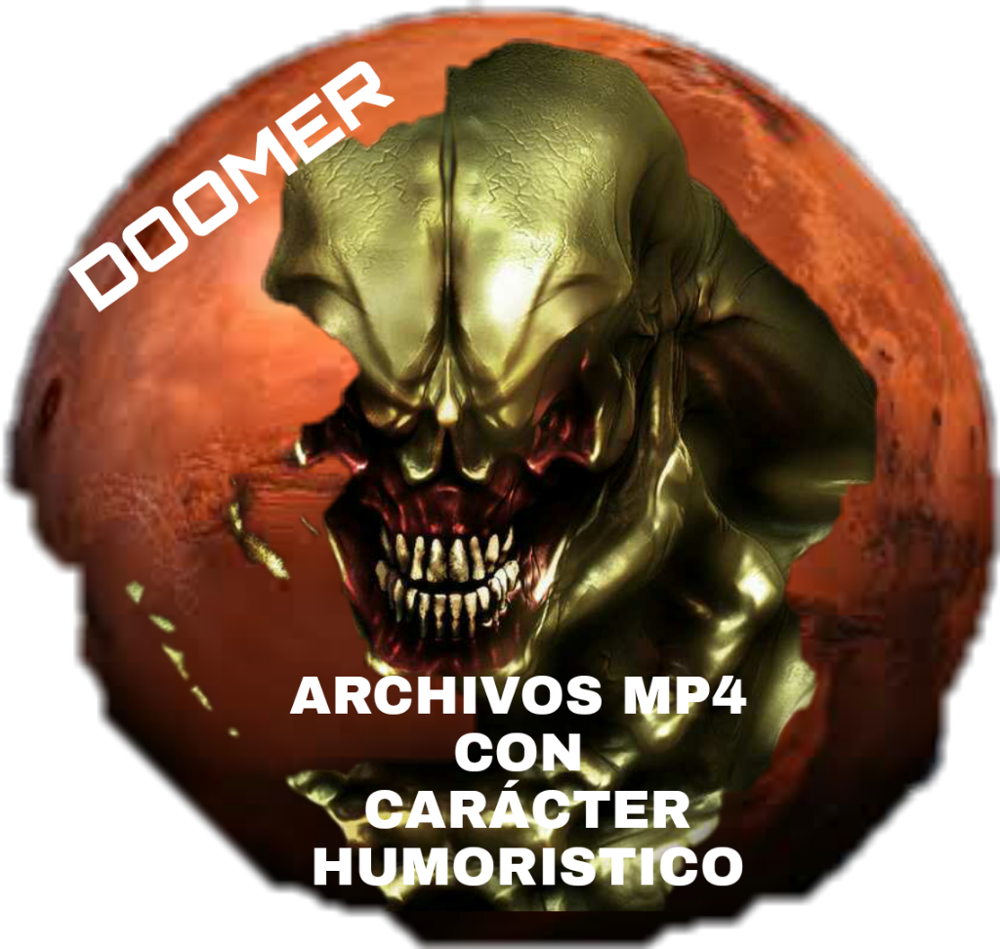

Hola! Soy Doomer de AMP4CCH.
Desde el 2018 me encuentro creando contenido para internet, he diseñado, programado y subido paginas WEB, también cree contenido para mi canal principal de Youtube.
El aniversario del canal es el 28 de enero del año 2018 y recuerdo bien el porque cree esta cuenta de GMAIL y posteriormente la creación del canal, todo por que en esos años había tenido una relación de 1 año con una chica que llamaremos Betty Gomitas, 1 y 1 mes fue el tiempo que estuve con ella, me termino en un parque cerca de la linea 2 del metro de la CDMX a las 11:23 am del día... es broma no recuerdo ni su nombre completo, el punto es que me termino y tuve que empezar una nueva vida con un nuevo nombre, si siempre he sido muy extremista, elimine mi cuenta de Facebook donde la tenia agregada y empecé desde cero con otra cuenta, la que ahora mismo es la cuenta de mi canal AMP4CCH, es curioso como todo eso me llevo a lo que estoy viviendo hoy en día, como una acción te lleva por un camino u otro, pero el primer nombre del canal no fue Archivos MP4 Con Carácter Humorístico, el nombre original era mi nombre real con uno de mis apellidos, despues de unos meses a finales del 2018 sin nada que hacer y con, en ese tiempo, un buen amigo planeamos la creación de una pagina de memes en Facebook, llamada Pagina para adolecentes gordos con problemas cardiacos (si, siempre me han gustado los nombre largos) con la pagina creada y con seguidores en aumento pensé en la brillante idea de crear una subdivisión de la pagina para subir vídeos en baja calidad o shitpost, y su nombre seria igual de largo que el de la pagina oficial Archivos MP4 Con Carácter Humorístico, aun que pensé en otros nombres, como Archivos MP4 De Caracter Humorístico o TRASH que en ese entonces era mi nickname para subir contenido en la pagina de Facebook, también pensé en crear una pagina aparte en Facebook llamada Archivos JPG de Carácter Humorístico, esa idea no la concrete por estar ocupado con la otra pagina, el canal tuvo un aumento de suscriptores pocos meses despues en el año 2020 en plena crisis global por el covid gracias al vídeo de El Gobierno Gobierna que resabí en diferentes versiones solo por que en ese entonces me dio gracia, ahora mismo el escuchar el gobierno gobierna me da nauseas, en ese mismo año empecé a hacer podcast en Stereo la app patrocinada por Willy y Vegetta777, no crei ser de los mas populares en ese año en la parte de idioma en español, lidere junto con otras 2 personas el top 3 de podcast en noviembre diciembre del 2020 y principios de enero del 2021, a finales de enero mi cuento principal fue baneada por la app por tener contenido subido de tono, si en esa época era mas agresivo con mis comentarios, siendo capas de solo decir groserias durante 10 min seguidos con un desconocido solo por los loles, en 2021 para ser mas específicos en marzo de ese año, empecé a crear contenido tipo "Charlando en directo" en el canal AMP4CCH con los primeros títulos siendo Voy a platicar y si no te gusta que te jod**, si, seguía siendo muy agresivo en ese tiempo, pasado los meses relaje mi manera de expresarme y empecé a crear historias "Canon" con la audiencia, en donde podían ser un personaje en ese mundo y crear su historia que quedaría grabada en los directos del canal, con el tiempo se unieron nuevos personajes cada uno tan peculiar como el anterior, desde cheems hasta la IA del canal, todo eso es muy complejo y largo de contar por tantas historias que se han vuelto canon y posteriormente descanonizado, a día de hoy estamos en la temporada 3 de Dumer en vivo y la primera temporada de Dumer en Minecraft, esto aun no termina, aun quedan historias por contar y espero que tu seas parte de esto Usuario Genérico, todo esto solo es un resume de lo que paso desde el 2018 hasta hoy!
Esta pagina estaba planeada desde finales de diciembre del año 2021 he inicios del año 2022, se planeo crear y estar completamente en linea para junio o julio del 2022 pero por diferentes razones se termino aplazando para el 2023, por suerte encontré una manera de tener una pagina en condiciones unos días antes de final del 2022, espero que disfrutes con todo el contenido que voy a crear para esta pagina para el canal y para Itch.io!
Gracias por leer Usuario Generico! Nos vemos pronto, siyachomp!
